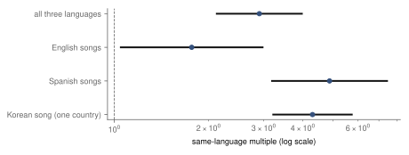
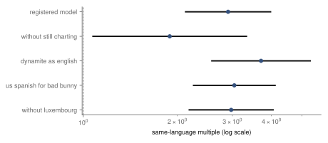
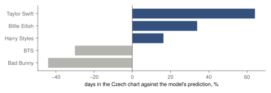
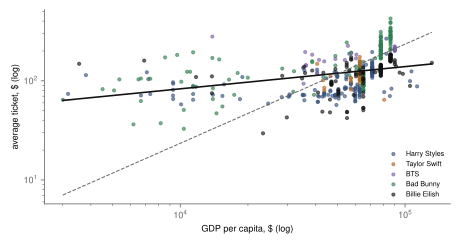
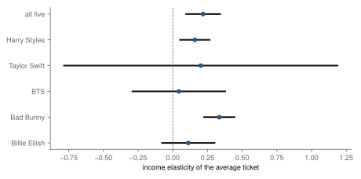

Research · Pop, measured, part 6 · five artists together, 2017–2026
Songs lasted longer in their artist's language market, and ticket prices varied little with income
Exploratory, five artists: songs lasted 2.9 times as long where their artist's market language is spoken, 3.7 with Dynamite coded as English; average tickets were 0.22 % higher per 1 % higher host-country income.
- language of the artist's market, days in the chart
- 2.9× 95 % CI 2.1–4.0 · 348 artist–country pairs, artist and country fixed effects; Dynamite coded as English 3.7× (2.6–5.3)
- income elasticity of the average ticket
- 0.22 95 % CI 0.10 to 0.35 · 484 entries, tour fixed effects
- a ticket in a country ten times poorer
- about 6.0× 95 % CI 4.5–7.9 · the days of GDP per head, derived from the elasticity and its interval
Overwhelmed? Here's the short version
- Net of the country and the song, a focal song's days in a national chart were longer where the language of the artist's market is an official language: BTS's Dynamite, sung in English, is coded Korean under the registered coding, and coding it English gives a larger multiple, so the variable describes the artist's market, not the language of the lyrics.
- The pooled figure mixes about 1.8 times for the English songs with 4.9 times for one Spanish song, Bad Bunny's, whose same-language pairs are all still in the charts; without the songs still charting it is 1.9, close to the English estimate.
- Within a tour, the average ticket was 0.22 % higher in countries with 1 % higher GDP per capita, so a ticket cost more days of GDP per head in poorer countries; without Bad Bunny's tours the elasticity is 0.14.
- In Czechia the English-language songs did better than the model expects and the Korean and Spanish ones worse, but that is the pattern in most countries that speak none of the five languages, not a Czech trait.
- This is exploratory and descriptive: the inputs were already seen in parts 1–5, five artists are not a sample of pop, song age, promotion and diaspora audiences are not separated from language, and more artists singing in other languages could overturn either result.
Photo: Nainoa Shizuru · CC0, toned
Parts 1 to 5 of Pop, measured asked the same questions of five artists one at a time, and each part could say only how its own artist compared with a reference: other number ones, other countries' hits, other cities. Set side by side, the five parts allow two questions none of them could answer alone. The first is whether a song lasts longer in countries that speak the language of its artist's market. Ferreira and Waldfogel showed, for half a century of national charts, that listeners favour music from their own country even as music trade has grown1; streaming data, which economists have used to measure how streaming changes music sales2, let the question be asked song by song and day by day. The second is whether concert prices follow the incomes of the places a tour visits. Krueger described how the concert market prices superstars3, and Courty and Pagliero the pricing styles promoters use, including how much prices vary across seats and shows4; a tour that plays the Philippines, Mexico and Switzerland in one year shows whether its average ticket differs with the host country's income. Both questions are answered here, descriptively, with fixed-effects regressions on the parts' published results.
Data
The first model uses every pair of an artist and a country in which the artist's focal song, the part's song with the most global streams (for Bad Bunny, the most-streamed one with a full record), entered the national Spotify Top 200: 348 pairs across five artists and 73 countries, each with the song's days in that chart. Pairs where the song never charted are not in the data, so the model describes how long a song lasted once it had entered, not whether it entered. 48 of the pairs are songs still in the chart, whose days are a lower bound. The five focal songs are As It Was (Harry Styles), Cruel Summer (Taylor Swift), Dynamite (BTS), DtMF (Bad Bunny) and BIRDS OF A FEATHER (Billie Eilish). Each pair is coded, as committed in the design, for whether the language of the artist's market is an official national language of the country: English for Harry Styles, Taylor Swift and Billie Eilish, Spanish for Bad Bunny, Korean for BTS. For four of the songs that is also the language they are sung in; BTS's Dynamite is sung in English, so the variable is the language of the artist's market, not of the lyrics, and the check that codes Dynamite as English is reported beside it; English-speaking countries are those where English is an official national language, Spanish-speaking those of Spain and Latin America, and Korean only South Korea. 57 pairs share a language.
The second model uses every Boxscore entry (Billboard's record of concert grosses, as reported on Wikipedia) with gross and tickets sold from the five artists' tours, as in the parts' ticket question: 484 entries from 13 tours in 43 countries, with entries that counted online viewers left out. The outcome is the average ticket, gross divided by tickets sold, and the regressor the host country's GDP per capita in current dollars for the year of the show.
How this was done
For language, the model is log(days in the chart) = artist effect + country effect + β × same language. The country effects absorb everything about a country that makes all hits linger or pass, such as how many people use Spotify and how fast its chart turns over; the artist effects absorb how strong each focal song is everywhere. What is left to identify β is the difference, within a country, between songs in its language and songs not in it, compared with the same difference elsewhere: Spain comparing Bad Bunny with the English-language songs, the United States comparing the English-language songs with BTS and Bad Bunny. exp(β) is the multiple of days. A second version lets the effect differ for English and Spanish songs; the Korean effect rests on one country and is shown but not read. β is an association net of the country and the song, not the effect of a song's language: anything else that differs between a song's home market and other countries, after the country and the song are held fixed, is in it.
For prices, the model is log(average ticket) = tour effect + θ × log(GDP per capita). The tour effects absorb each tour's general price level, so θ compares the cities within a tour: an elasticity of 0 means a tour charged the same everywhere, 1 that it charged in proportion to local incomes. A second version adds the venue's capacity per night. In both models the standard errors are clustered by country, which lets the errors of the same country's rows be related, since the same country appears for several artists5; the 95 % confidence intervals (CI) are built from them. The models, the coding of languages and the checks were committed before anything was estimated, but the inputs had already been seen in parts 1–5, so the results are exploratory: they show what the data say under rules fixed in advance, not a test of a hypothesis made before the data.
Days in the chart where the artist's market language is spoken
Under the coding committed in the design, a song lasted 2.9 times as long in a country that speaks the language of its artist's market as in one that does not, net of the country and the song (95 % CI 2.1–4.0). Coding Dynamite by the language it is sung in, English, the multiple is 3.7 (2.6–5.3); the two codings answer different questions, and neither is the effect of a song's language. Split by language, English songs in English-speaking countries lasted 1.8 times as long (1.05–3.0, 38 pairs), and Bad Bunny's Spanish song in Spanish-speaking countries 4.9 times as long (3.2–7.4, 18 pairs). The Korean estimate, 4.3 times, rests on South Korea alone and says nothing on its own. The English multiple is the smaller and less certain of the two. Part of the gap may be the coding: of the 13 English-coded countries in the data, seven (Hong Kong, India, Nigeria, Pakistan, the Philippines, Singapore and South Africa) mostly speak other languages, which would pull the English estimate down. Another reading, which the data do not test, is that English is the most common language of global pop: an English song is foreign in fewer places, so the gap between home and abroad is narrower.
Exploratory: songs lasted 2.9 times as long where the artist's market language is spoken, carried by one Spanish song; English songs alone, 1.8 times.

Every check fixed in advance leaves the estimate above one, but the checks are not equally informative. Without the songs still in the chart, whose days are lower bounds, the multiple is 1.9 (1.07–3.3); coding BTS's Dynamite as English, which it is sung in, it is 3.7; treating the United States as Spanish-speaking for Bad Bunny, because of its large Spanish-speaking population, 3.0; and without Luxembourg, whose one-day number ones distort the parts' ratios, 3.0. Every interval stays above one. The smallest estimate is the one without songs still charting: those include all 18 of Bad Bunny's pairs in Spanish-speaking countries, so this check has no Spanish same-language pair at all and rests on the English songs and the one Korean pair, and it comes out close to the English-only estimate of 1.8. The rise from about 1.8 to 2.9 times in the main model comes from one Spanish song whose same-language days are all still running.
Which pairs carry the same-language multiple is easy to see in the countries where the five songs meet. In the United Kingdom the three English songs lasted 1 152, 891 and 866 days, BTS's 217 and Bad Bunny's 141; in the United States the English songs between 850 and 902 days, BTS's 332. In South Korea BTS's song lasted 1 253 days and Bad Bunny's 14. The Spanish-speaking countries are the subtler case. Bad Bunny's song lasted 634 days in Spain and 634 in Mexico, every day since it came out, while Harry Styles's lasted 757 and 867: within those countries alone, the Spanish song does not win, because it is younger and has not had time to. What sets it apart is how quickly it passed everywhere else, 141 days in the United Kingdom and 105 in Czechia. The artist effect measures a song's strength across all countries, so the same-language multiple is the gap between how a song did at home and how it did abroad, compared across the five; for Bad Bunny that gap is the widest.
Every check fixed in advance leaves the multiple above one; without the songs still charting it is 1.9.

The model does not show why. Several things that differ between an artist's home market and other countries are not held fixed, and each could produce the same pattern. The songs entered the charts on different dates, so they had different spans in which to collect days, and the younger songs' days are more often still running (censored): every Spanish same-language pair is Bad Bunny's DtMF, still charting. Labels promote hardest in the artist's home market and its language region. Diaspora audiences, such as Spanish speakers in the United States, carry a song outside the countries coded as same-language. And the language groups are artists: all 18 Spanish pairs are Bad Bunny's, and the one Korean pair is BTS's in South Korea. Radio, playlists built by country and understanding the lyrics are further candidates. What the fixed effects do remove is that some countries keep every hit longer and that some songs are bigger everywhere.
Czechia, against the model
The model predicts how long each song should have lasted in Czechia, from how long hits last there and how strong each song was. Against that prediction, Taylor Swift's song lasted +64 % longer in the Czech chart, Billie Eilish's +34 % and Harry Styles's +16 %, and BTS's −30 % and Bad Bunny's −44 %. Because the model has a country effect, the five Czech residuals cancel out on the log scale: some songs must sit above the prediction and some below, so these say how the songs did relative to each other in Czechia, not that Czech listeners kept hits longer or shorter overall. Czech is not English, so none of the five pairs counts as same-language. Nor is the pattern Czech: in 27 of the 40 countries that speak none of the five languages and have both kinds of song, the English songs did better against the model, on average, than the Korean and Spanish ones (a comparison added after an audit, not registered). That is the model missing something common to English songs outside English-speaking countries, and Czechia follows it. With five songs these are descriptions of five pairs, not estimates of a Czech taste.
Against the model, the English songs did better in Czechia and BTS's and Bad Bunny's worse, as in most countries that speak none of the five languages.

The average ticket and the host country's income
Within a tour, the average ticket was 0.22 % higher in countries with 1 % higher GDP per capita: the income elasticity of the average ticket is 0.22 (95 % CI 0.10 to 0.35, 484 entries). In a country with ten times the GDP per head, the average ticket was about 1.68 times as high; in a country ten times poorer, about 40 % lower, so a ticket cost about 6.0 times as many days of GDP per head (4.5 to 7.9), a rough stand-in for what fans earn. Adding the venue's capacity per night barely changes it (0.22). Dropping each artist in turn keeps it between 0.14 (without Bad Bunny) and 0.27. The average ticket was lower in poorer host countries, but far less than in proportion to income. This is a description across entries: the seat mix, the venue and the promoter differ with the country and are not held fixed.
Across the five artists' tours, the host countries' GDP per head, averaged over the years in which the tours played there, runs from 3 003 dollars a year in Honduras to 101 733 in Ireland, a ratio of about 34; the model itself uses each show's year. At an elasticity of 0.22, an average ticket of 100 dollars in Ireland corresponds to about 45 dollars in Honduras: 2.2 times lower in a country 34 times poorer, and so about 15 times higher measured in days of income. That is the arithmetic behind the large ticket squares in parts 1, 3, 4 and 5.
Exploratory: the average ticket was 0.22 % higher where host-country GDP per capita was 1 % higher, far flatter than prices in proportion to income.

The artists' estimates differ, though their intervals overlap. Bad Bunny's is the highest, 0.35 (0.24 to 0.46), over 28 countries from Honduras to USA. Harry Styles's is 0.16 (0.05 to 0.27) and Billie Eilish's 0.11 (−0.08 to 0.30), an interval that includes zero. BTS's estimate, 0.04 (−0.29 to 0.38), rests on 24 entries in 11 countries and is too uncertain to say whether its prices followed income at all; a BTS ticket in Mexico cost its fans more than a week of GDP per head. Taylor Swift's estimate, 0.20 (−0.78 to 1.19), rests on one tour of 7 rich countries and has an interval too wide to read. With 11 and 7 countries, these two clustered intervals are also less reliable than the usual rules of thumb assume5. Every interval except Taylor Swift's stays well below one: none of the other four artists' tours came close to pricing in proportion to income.
Every interval but Taylor Swift's, too wide to read, stays well below 1: none of the other four tours came close to pricing in proportion to income.

What these models can and cannot separate
Three limits shape how far the language result goes. First, the model sees a pair only once the song entered the country's chart. Songs that never entered a chart abroad are missing. If those are mostly the ones that did worst away from their artist's market, the association among songs that charted would be smaller than the one on whether a song charts at all; that is a conjecture, not tested here. Second, the language groups are tied to artists: every Spanish pair is Bad Bunny's and the only Korean pair is BTS's in Korea. The artist effects remove how strong each song is overall, but they cannot tell language from anything else that sets Bad Bunny's or BTS's home markets apart, such as promotion, release dates or genre. Third, with 73 country clusters the clustered standard errors are reliable by the usual rules of thumb5, but for the language groups they rest on fewer contrasts: 38 English pairs and 18 Spanish ones.
The price model has its own limits. Tour effects remove each tour's level, so the elasticity comes from cities within a tour; a whole leg in a poorer region with lower prices would show up partly in the tour effect, and push the estimate down. The average ticket mixes cheap and dear seats, and a tour that sold more cheap seats in poorer countries would show a lower average without changing any one price, which would push the estimate up. The data cannot say which of the two dominates. Neither model is causal: they describe how the five artists' songs and tours behaved, under rules fixed before the estimates were seen.
What this means
Measured across five artists, a focal song stayed longer in national charts where the language of the artist's market is spoken, 2.9 times as long net of the country and the song (3.7 with Dynamite coded as English); the pooled figure is carried by one Spanish song still in the charts, and for the English songs it is about 1.8 times. Within a tour, the average ticket was lower in poorer host countries, but far less than in proportion to income (elasticity 0.22, 0.10 to 0.35), so a ticket took several times more days of GDP per head in the Philippines or Honduras than in Norway. Neither is an effect: song age, promotion, diaspora audiences, the seat mix and the artists themselves are not separated. Both are exploratory, from five artists picked for a series, and are worth testing on more artists with a design written before the data.
What this does not show
Five artists are not a sample of pop, and their languages are tied to the artists: the Spanish same-language association is Bad Bunny's alone, the Korean one BTS's in one country. Language is the language of the artist's market, coded by official national language, which misses large minorities, as the check on the United States shows only in part. The model covers songs once they entered a chart, not whether they entered. Days in the chart are Spotify's and are not days in a row. The price model uses the average ticket, which mixes every seat; it cannot see resale prices, fees outside the gross, or who bought the tickets. GDP per capita is a rough stand-in for what fans earn. And neither model says why: radio, playlists, promotion, understanding and price-setting habits are all inside the estimates.
Reproduction
Every number on this page is filled in by a script from results.json, panel.csv and tickets.csv in assets/pop/together/. From the repository root, after parts 1–5 have been built: tools/pop/together.py builds the two tables and fits the models; together_article.py draws the figures and this page. The design is docs/research/pop-measured-part6-design.md.
References
- Ferreira, F., Waldfogel, J. (2013). Pop internationalism: has half a century of world music trade displaced local culture? The Economic Journal 123(569), 634–664. doi:10.1111/ecoj.12003. Accessed 2 October 2026.
- Aguiar, L., Waldfogel, J. (2018). As streaming reaches flood stage, does it stimulate or depress music sales? International Journal of Industrial Organization 57, 278–307. doi:10.1016/j.ijindorg.2017.06.004. Accessed 2 October 2026.
- Krueger, A. B. (2005). The economics of real superstars: the market for rock concerts in the material world. Journal of Labor Economics 23(1), 1–30. doi:10.1086/425431. Accessed 2 October 2026.
- Courty, P., Pagliero, M. (2014). The pricing of art and the art of pricing: pricing styles in the concert industry. In Handbook of the Economics of Art and Culture, vol. 2, 299–356. Elsevier. doi:10.1016/B978-0-444-53776-8.00013-1. Accessed 2 October 2026.
- Cameron, A. C., Miller, D. L. (2015). A practitioner's guide to cluster-robust inference. Journal of Human Resources 50(2), 317–372. doi:10.3368/jhr.50.2.317. Accessed 2 October 2026.